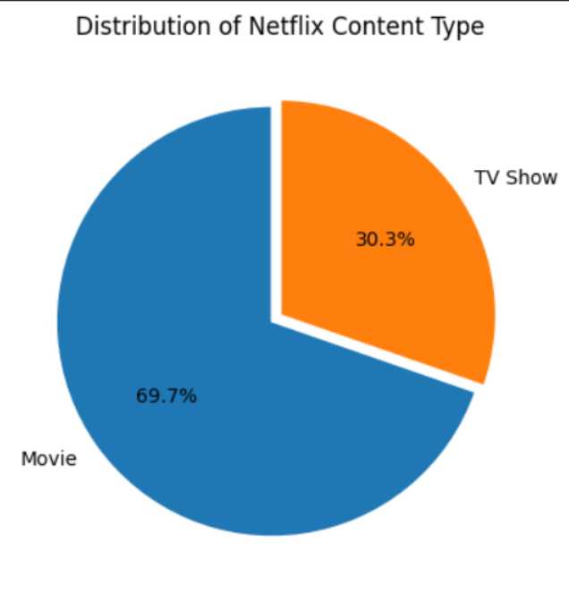
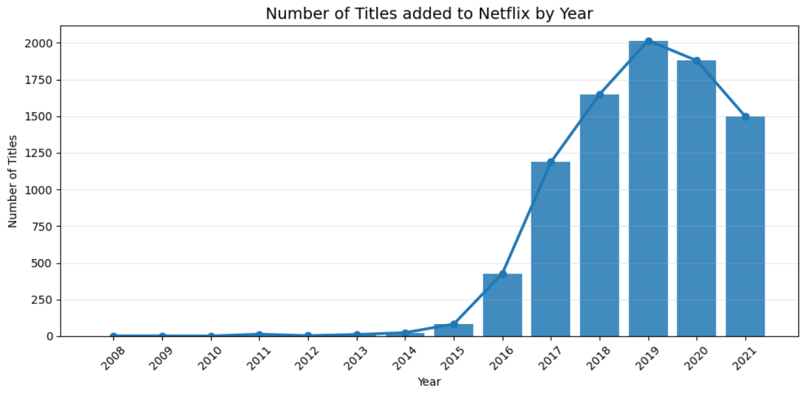
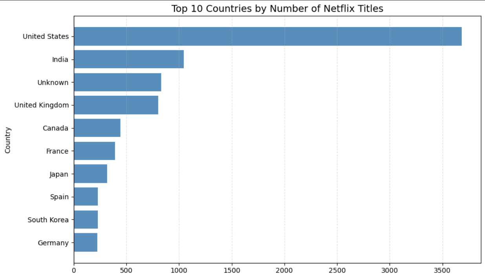
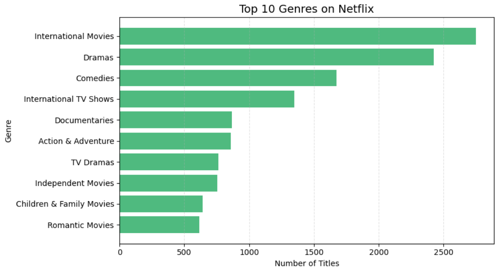

Netflix Content Analysis using Python
PYTHON · EDA · DATA VISUALIZATION
This project performs Exploratory Data Analysis (EDA) on the Netflix Titles dataset using Python. The objective is to clean the dataset, engineer useful features, visualize trends, and extract meaningful insights about Netflix's content library.
Project Overview
The project analyses the Netflix Titles dataset using Python-based data cleaning, feature engineering, exploratory analysis, and data visualization.
The analysis examines the composition and characteristics of Netflix's content library, including content types, countries, genres, ratings, directors, actors, and movie durations.
Objectives
- Perform data cleaning and preprocessing.
- Handle missing values and duplicate records.
- Create new features for analysis.
- Explore trends in Netflix's content library.
- Visualize insights using Python.
Dataset
Dataset: Netflix Titles Dataset
Source: Kaggle — Netflix Shows Dataset
The dataset contains information about movies and TV shows available on Netflix, including:
Tools and Libraries
Analysis Workflow
Exploratory Data Analysis
The project includes visualizations examining:
- Distribution of Movies vs TV Shows
- Titles Added to Netflix Over the Years
- Top Content Producing Countries
- Most Common Genres
- Distribution of Content Ratings
- Top Directors
- Top Actors
- Distribution of Movie Durations
Project Visualizations
Selected visualizations from the exploratory data analysis are presented below.

Distribution of Content Types
Movies account for approximately 70% of Netflix's
content library, while TV Shows make up around 30%.

Titles Added Over the Years
Netflix experienced rapid growth in content additions
between 2016 and 2019, with 2019 recording the highest
number of titles added.

Top Content Producing Countries
The United States is the largest contributor to
Netflix's catalog, followed by India and the
United Kingdom.

Most Common Genres
International Movies, Dramas, and Comedies are the
most frequently occurring genres.
Key Insights
- Movies account for approximately 70% of Netflix's content library, while TV Shows make up around 30%.
- Netflix experienced rapid growth in content additions between 2016 and 2019, with 2019 recording the highest number of titles added.
- The United States is the largest contributor to Netflix's catalog, followed by India and the United Kingdom.
- International Movies, Dramas, and Comedies are the most frequently occurring genres.
- Most Netflix content is targeted toward mature audiences, with TV-MA and TV-14 being the dominant content ratings.
- Movie durations are concentrated around the standard feature-film length of 80–120 minutes.
- A small group of directors and actors contribute multiple titles to Netflix's catalog, indicating recurring collaborations.
Project Repository
The complete Python analysis and project files are available in the GitHub repository.
View Project on GitHubReference
Netflix Titles Dataset — Kaggle.